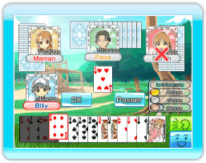

14 |
Règles de Family Daifugo |
 |

Le but de chaque jeu est de se débarrasser des cartes en main le premier et de devenir "Daifugo", ce qui signifie le plus riche.
La 1e place obtient 2 points, la 2e 1 point, les 3e et 4e places ne reçoivent aucun point.
Quand tu déposes au moins 4 cartes, tu auras alors une "révolution". Une fois que tu as créé une "révolution", la valeur de tes cartes va changer. (La carte la plus forte, le 2, devient la plus faible et la carte la plus faible, le 3, devient la plus forte.) ●La chute capitale Si le joueur qui était à la 1e place au tour précédant n'arrive pas à maintenir son rang au cours du 2e tour, il chutera automatiquement à la 4e place au tour suivant. ●Les 8 coupants Si un 8 est joué, seul ou combiné avec d'autres cartes, vous pouvez alors commencer un nouveau tour et la personne qui a déposé le 8 devient le donneur. ●Le joker Tu peux utiliser le joker comme carte frimée (il peut avoir la valeur de n'importe quelle autre carte). ●3 de pique Tu peux battre le joker avec le 3 de pique. Quand cela se produit, le tour est alors terminé et la personne qui a joué le 3 de pique peut commencer le tour suivant. ※Vous ne pouvez pas utiliser la «3 de pique» quand vous avez une révolution. ●Obligation de fournir Si deux joueurs déposent des cartes de la même couleur à la suite, le joueur suivant est obligé de jouer cette couleur pour le reste de ce tour. Ceci est appelé "obligation". ※«Obligation» ces règles ne sont pas permis pendant le jeu de CWF Nintendo. ●Perte pour infraction Si tu gagnes avec un 2, un 8 ou un joker, tu subiras une "perte par infraction". Et cela vaut même si le 2, le 8 ou le joker fait partie d'une paire ou de toute autre combinaison. ※Pendant une "révolution", jouer un 3 de pique signifiera une "perte pour infraction". |
 |
 |
 |